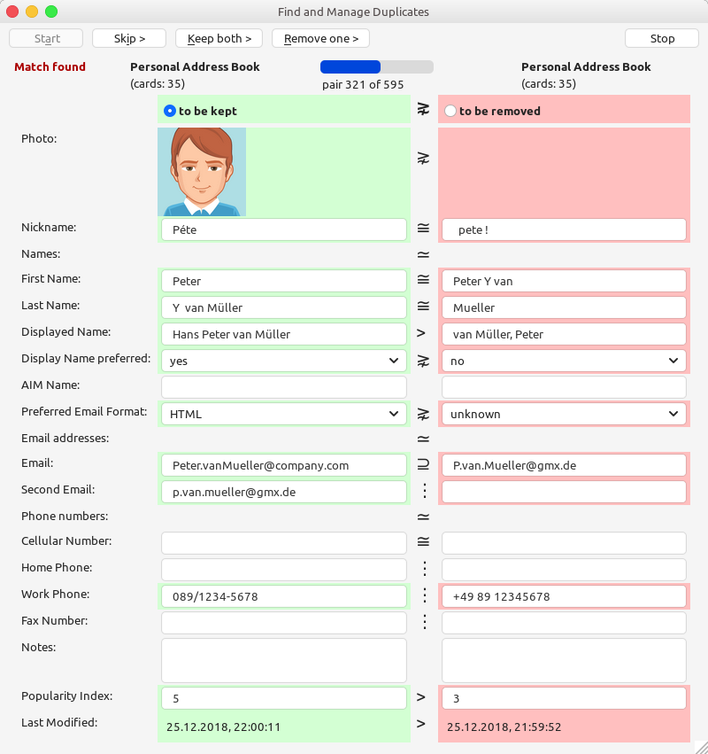
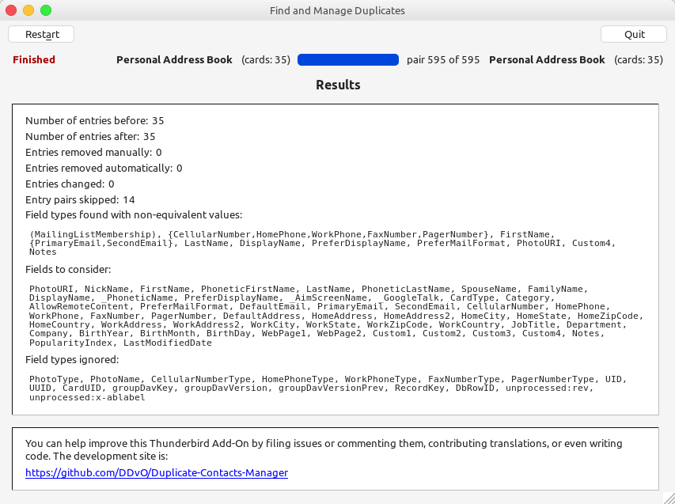

This Thunderbird extension facilitates handling of redundant entries in address books.
After installation it can be invoked via the Tools->Duplicate Contacts Manager... menu entry.
One can also customize the Toolbar of the Address Book window with a Find Duplicates button.
The Duplicate Contacts Manager searches address books for paris of matching contact entries, also known as cards.
It can automatically delete all cards that have equivalent or less information than some matching one.
Any remaining pairs of matching cards
are presented as candidate duplicates for manual treatment.
Each two cards are shown side-by-side with a comparison of all fields containing data, including any photo.
Some important fields are always shown such that they can be filled in when they have been empty so far.
When pairs of candidate duplicates are presented, the reason why they are considered matching is given in the column between them.
- The '≡' symbol is shown between non-empty fields with identical values, while non-identical values are highlighted by color.
All other relations are determined after abstraction of values (see the definitions below).
- The '≃' symbol indicates matching names, email addresses, or phone numbers.
- The '≅' symbol indicates equivalent cards, equivalent fields, or equal sets (after abstraction).
- The '⊆' and '⊇' symbols indicate the subset/superset relation on mailing list membership, email addresses, and phone numbers.
- The '⋦' and '⋧' symbols indicate that a field or a whole card contains less/more information than the other.
- The '<' and '>' symbols indicate comparison on numerical values or the substring/superstring relation on names and other texts.
During manual treatment of a pair of matching cards the user can skip them, can modify one or both of them, and can decide to delete one of them.
When a card is deleted and it has a primary email address that is contained in one or more mailing lists and the other card does not have the same primary email address, the address is also deleted from the respective mailing lists.
Matching contact entries
There are two search modes for finding matching cards:
- within a single address book with n cards, comparing each card with all other cards,
resulting in n*(n-1)/2 card comparisons.
- with two different address books with n and m cards, comparing each card in the first one
with each card of the second one, resulting in n*m card comparisons.
Two cards are considered matching if any of the following conditions hold, where the details are explained below.
- The cards contain matching names, or
- they contain matching email addresses, or
- they contain matching phone numbers, or
- both cards do not contain any name, email address, or phone number that might match.
Yet cards with non-equivalent AIMScreenName are never considered matching,
which is convenient for preventing cards from being repeatedly presented for manual treatment.
The matching relation is designed to be rather weak, such that it tends to yield more pairs of candidate duplicates.
Matching of names, email addresses, and phone numbers is based upon
equivalence and sub-equivalence of fields modulo abstraction, described below.
As a result, for example, names differing only in letter case are considered to match.
For the matching process, names are completed and their order is normalized —
for example, if two name parts are detected in the DisplayName (e.g., "John Doe")
r in an email address (e.g., "John.Doe@company.com"), they are taken as first and last name.
Both multiple email addresses within a card and multiple phone numbers within a card
are treated as sets, i.e., their order is ignored as well as their types.
- Two cards are considered to have matching names if
- their
DisplayNames consist both of one word or both of more than one word and are sub-equivalent, or
- both their
FirstName and their LastName are not empty and are pairwise sub-equivalent, or
- their
DisplayNames are empty but their FirstName or LastName are not empty and are pairwise sub-equivalent, or
- in one card the
DisplayName is empty and either the FirstName or LastName is not empty and is sub-equivalent to the DisplayName of the other card, or
- their
AIMScreenNames are not empty and sub-equivalent.
- Two cards are considered to contain matching email address if any of their
PrimaryEmail or SecondEmail are equivalent.
- Two cards are considered to contain matching phone numbers if any of their
CellularNumber, WorkPhone, or PagerNumber are equivalent. The HomePhone and FaxNumber fields are not considered for matching because such numbers are often shared.
Abstraction of field values
Before card fields are compared their values are abstracted using the following steps.
- Pruning, which removes stray contents irrelevant for comparison:
- ignore values of certain field types — the set of ignored fields is configurable
with the default being
UID, UUID, CardUID, groupDavKey, groupDavVersion, groupDavVersionPrev, RecordKey, DbRowID,
PhotoType, PhotoName, LowercasePrimaryEmail, LowercaseSecondEmail, unprocessed:rev, unprocessed:x-ablabel,
- remove leading/trailing/multiple whitespace and strip non-digit characters from phone numbers,
- strip any stray email address duplicates from names, which get inserted by some email clients as default names, and
- replace
@googlemail.com by @gmail.com in email addresses.
- Transformation, which re-arranges information for better comparison:
- correct the order of first and last name (for instance, re-order "Doe, John"),
- move middle initials such as "M" from last name to first name, and
- move last name prefixes such as "von" from first name to last name.
- Normalization, which equalizes representation variants:
- convert to lowercase (except for name part of AOL email addresses),
- convert texts by transcribing umlauts and ligatures, and
- if configured, replace in phone numbers the international call prefix (such as '00') by '+'
and the national trunk prefix (such as '0')
by the default country calling code (such as '+49').
- Simplification, which strips less relevant information from texts by removing accents and punctuation.
Corresponding fields in two cards are considered equivalent if their abstracted values are equal.
Parts of names are considered sub-equivalent if their abstracted values are equal
or the abstracted value of one of them is a non-empty whole-word substring of the abstracted value of the other.
Note that the value adaptations mentioned above are computed only for the comparison, i.e., they do not change the actual card fields.
If automatic removal is chosen, only cards are removed that match some other card and have equivalent or less information than the other card and are preferred for deletion; for details see below.
When a pair of matching cards is presented for manual inspection, the card flagged by default with red color for removal is the one preferred for deletion.
Equivalence of information
A card is considered to have equivalent or less information than another card if for each field:
- the field is configured to be ignored or one of
PopularityIndex, LastModifiedDate, RecordKey, and DbRowID (which are always ignored here), or else
- the field is equivalent to the corresponding field of the other card, or
- it is a text (e.g., some name, address component, or
Notes) and its abstracted value is a substring of the corresponding field value of the other card, or else
- it is treated as a set and the set of abstracted values is a subset of the corresponding set of the other card, or else
- after abstraction it has the default value, i.e., it is empty for text fields or its value is
0 for numerical fields or false for Boolean fields.
For the above field-wise comparison, the email addresses of a card are treated as a set,
the phone numbers of a card are also treated as a set, and
the set of names of mailing lists a card belongs to is treated as an additional field.
Of two matching cards one is preferred for deletion such that
- it has fewer non-empty fields, or else the number of non-empty fields is equal and
- the character weight of the card is smaller, i.e.,
its pruned and transformed (non-ignored) textual field and phone number field values have an equal or smaller total number of uppercase letters and special characters than the other card, or else the character weight is equal and
- it is used less frequently (i.e, its
PopularityIndex is smaller), or else it has the same usage frequency and
- it is older (i.e., its
LastModifiedDate is smaller), or else it has the same age and
- it is found in the second address book if the address books searched are different, or else
- it is found later in the same address book.
Here is an example.

The card on the right will be preferred for deletion because it contains less information.
NickName: | "Péte" | " pete ! " | accent, punctuation, letter case, and whitespace ignored
|
FirstName: | "Peter" | "Peter Y van" | name prefix "van" moved to last name
|
LastName: | "Y van Müller" | "Mueller" | middle initial "Y" moved to first name, umlauts transcribed
|
DisplayName: | "Hans Peter van Müller" | "van Müller, Peter" | first name moved to the front, name is substring
|
PreferDisplayName: | 'yes' | 'yes' | same value
|
AimScreenName: | "" | "" | same AIM name
|
PreferMailFormat: | 'HTML' | 'unknown' | default ('unknown') considered less information
|
PrimaryEmail: | "Peter.vanMueller@company.com" | "P.van.Mueller@gmx.de" | emails treated as sets, letter case ignored
|
SecondaryEmail: | "p.van.mueller@gmx.de" | "" | emails treated as sets, letter case ignored
|
WorkPhone: | "089/1234-5678" | "+49 89 12345678" | trunk prefix and international call (IDD) prefix normalized and non-digits ignored
|
PopularityIndex: | 5 | 3 | field ignored for infomation comparison
|
LastModifiedDate: | 2018-02-25 07:51:28 | 2018-02-25 08:30:37 | field ignored for information comparison
|
UUID: | "" | "903a61be-64d5-4844-802a" | field ignored
|

Configuration variables
The options/configuration/preferences used by this Thunderbird extension are are saved in configuration keys starting with extensions.DuplicateContactsManager. —
for instance, the list of ignored fields is stored in the variable ignoreFields.
Update of 2017-02-27, introducing version 1.0
This is a major update, which I call Version 1.0, of the
Duplicate Contact Manager.
Work on this extension apparently has been stopped by end of 2012.
Meanwhile, mixed user experience piled up on the official Thunderbird add-on feedback page.
Recently I faced a major challenge: my address book with some 1.200 entries
got inflated by a buggy CardDAV online sync tool to more than 17.000 cards.
The new copies contained new types of automatically generated identification meta fields.
When I tried to clean the mess automatically using Duplicate Contact Manager,
this did not work because it considered the copies different due to the new identifiers.
So I added to the extension a configurable list of field types ignored during comparison.
Doing so, I started fixing several issues and adding further features:
- major speedup in particular when searching for duplicates in large address books
For instance, automatically removing 13340 duplicates of 14702 recently took 2 minutes and 43 seconds.
- improved user guidance; new
Tools menu entry with default address book selection
- various improvements of content matching and card comparison for equivalence
- cards may be excluded from being shown as matching by setting a different AIM name
- photos are compared for equality and are shown during manual inspection
- mailing list membership is taken into account for comparison and shown during inspection
- during manual inspection, field-by-field (resp. set-by-set) comparison information is shown
- option to consider phone numbers preceded by international call prefix or trunk prefix equivalent with numbers preceded by '+' and the default country calling code
- option to customize list of ignored fields; output summary of different fields
- option to preserve entries of first address book when auto-deleting redundant entries
- options are saved in TB configuration/preferences at
extensions.DuplicateContactsManager.*
- TODO: add option to prune and transform contents of individual or all cards
- TODO: add option to automatically and/or manually merge fields (e.g., buttons with arrow)
- TODO: check and improve French and Spanish translations of new texts
Part of the original post of 2012-04-07, introducing version 0.9:
The so far available Version 0.8.2 was a good starting point,
but since I urgently needed a more sophisticated tool, I started improving it myself.
My changes have been motivated — and validated — using my personal
address book with some pretty diligently manually managed 1.000 entries and using
the automatically generated collected address book with some 2.500 entries
including many duplicates and weird variants of names etc.
The change log is:
- fields of retained duplicate entry can be edited
- can compare across two different address books
- new option to first collect all duplicates and then handle them
- card matching is less aggressive and more fault tolerant:
only very likely duplicates — and more of these — are presented
- the less complete duplicate is selected for removal by default
- automatic removal option now removes also less complete duplicates
- made the overall search process interruptable and repeatable
- moved Thunderbird menu entry into
Address Book → Tools
- many other small improvements, e.g., on progress bar and final info
- internal: major code cleanup (would be still a lot TODO)
- TODO for others: check/update/improve French and Spanish translations
- TODO for others: update online documentation using the above text
Questions and comments are welcome.
backZurück

![[Valid HTML5]](../pic/html5.png) URL: http://ddvo.net/DuplicateContactsManager/index.html,
Last modified: Mon Dec 31 18:12:14 CET 2018
URL: http://ddvo.net/DuplicateContactsManager/index.html,
Last modified: Mon Dec 31 18:12:14 CET 2018